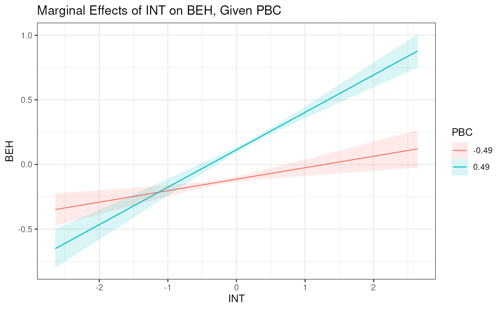

Plotting Interaction Effects
Interaction effects can be plotted using the included
plot_interaction() function. This function takes a fitted
model object and the names of the two variables that are interacting.
The function will plot the interaction effect of the two variables,
where:
- The x-variable is plotted on the x-axis.
- The y-variable is plotted on the y-axis.
- The z-variable determines at which points the effect of x on y is plotted.
The function will also plot the 95% confidence interval for the interaction effect.
Here is a simple example using the double-centering approach:
m1 <- "
# Outer Model
X =~ x1
X =~ x2 + x3
Z =~ z1 + z2 + z3
Y =~ y1 + y2 + y3
# Inner Model
Y ~ X + Z + X:Z
"
est1 <- modsem(m1, data = oneInt)
plot_interaction("X", "Z", "Y", "X:Z", vals_z = -3:3, range_y = c(-0.2, 0), model = est1)
Here is a different example using the lms approach in
the theory of planned behavior model:
tpb <- "
# Outer Model (Based on Hagger et al., 2007)
ATT =~ att1 + att2 + att3 + att4 + att5
SN =~ sn1 + sn2
PBC =~ pbc1 + pbc2 + pbc3
INT =~ int1 + int2 + int3
BEH =~ b1 + b2
# Inner Model (Based on Steinmetz et al., 2011)
INT ~ ATT + SN + PBC
BEH ~ INT + PBC
BEH ~ PBC:INT
"
est2 <- modsem(tpb, TPB, method = "lms")
#> Warning: It is recommended that you have at least 32 nodes for interaction
#> effects between exogenous and endogenous variables in the lms approach 'nodes =
#> 24'
plot_interaction(x = "INT", z = "PBC", y = "BEH", xz = "PBC:INT",
vals_z = c(-0.5, 0.5), model = est2)